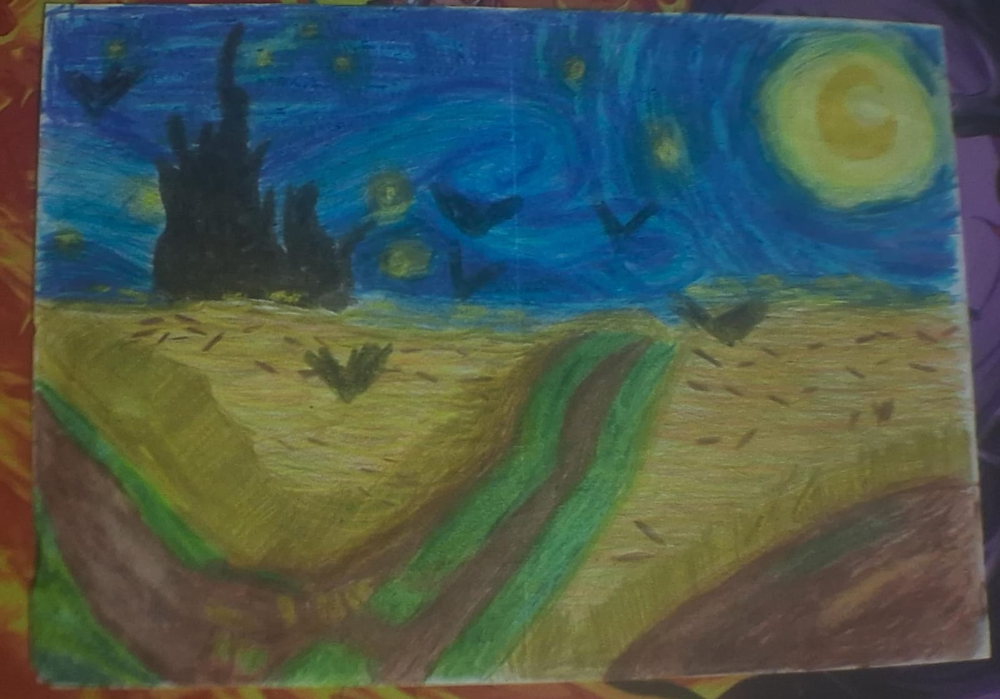
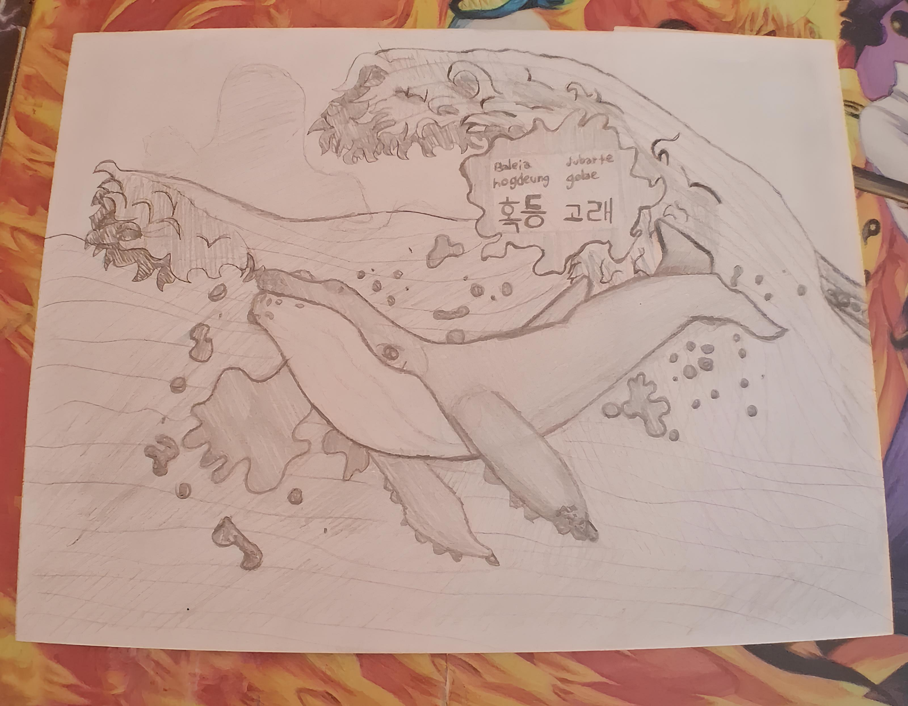
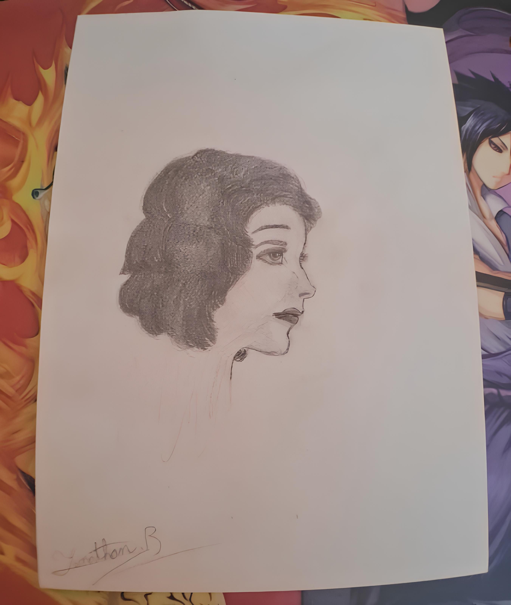
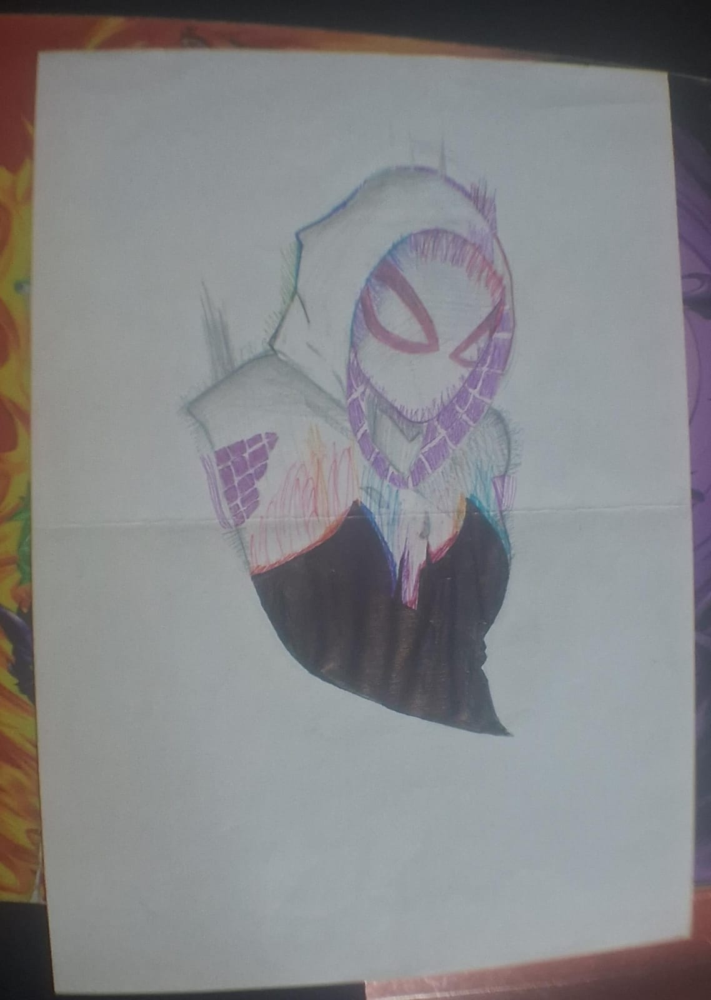
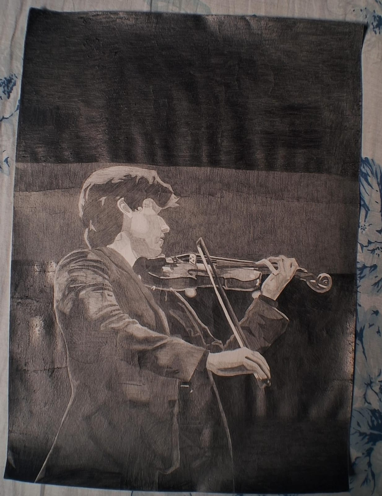
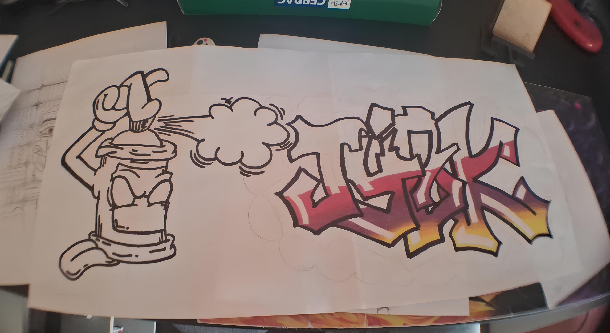
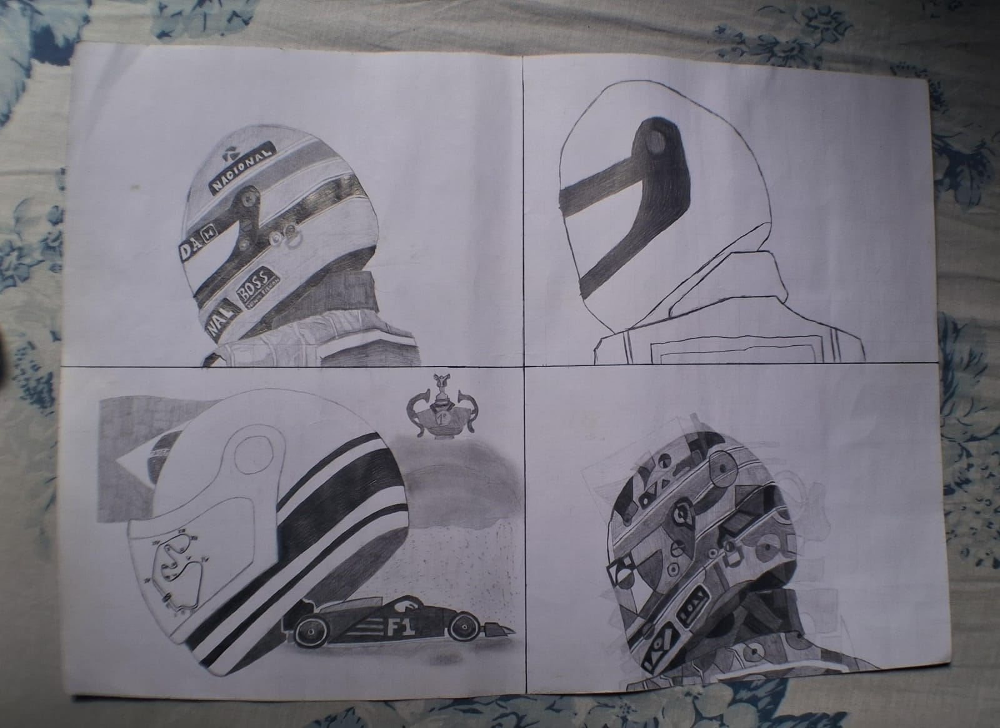
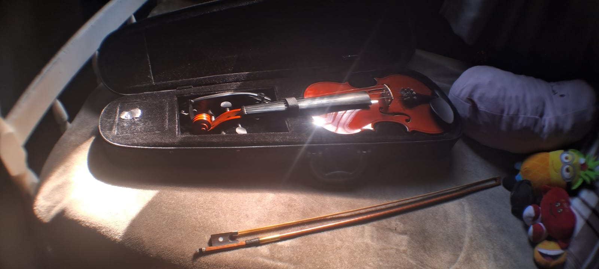
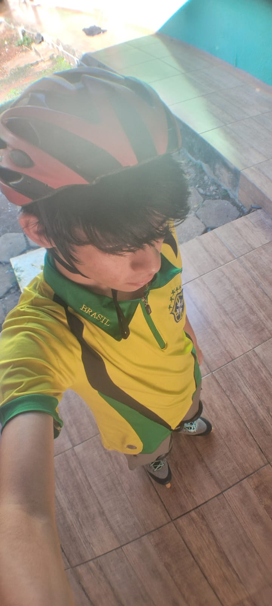
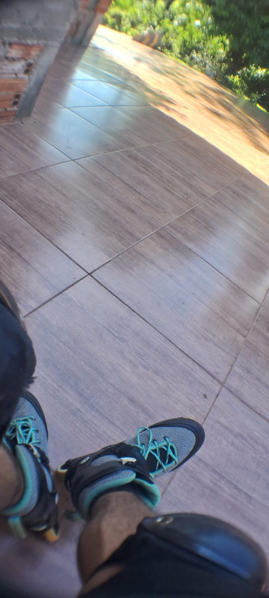

Portifólio -- Habilidades
Aqui eu vou dizer alguns dos meus dons, tanto artistico, na música, na parte linguística e outros.
Algumas das minhas habilidades são:
Artistico
Aprendi a desenhar sozinho, eu sempre guardo minhas artes numa pasta,
mas tem uns que são tão grandes que não dá para deixar nela. Desenhar é algo incrível, um lugar onde você pode expressar emoções, passar ideias,
um mundo totalmente seu, fazer ilustrações de paisagens,




Alguns desenhos maiores:

Eu ainda não terminei o grafite:


Musical

Eu começei a tocar um instrumento em 2019 na Pandemia e iniciei com o meu belo violino e aprendi a ler partitura tudo graças a igreja que a minha tia frequentava, hoje em dia apenas sei tocar violino, mas quem sabe o que posso aprender futuramente né? Como eu escuto mais músicas gospels esse é o meu estilo favorito, no meu Spotfy tá cheio, mas com vários tipos diferentes de gospels.
Patinação


Eu comecei a patinar em um lugar chamado "Centro da Juventude" alguns anos atrás, eu e meu irmão iamos lá com a amiga dele e meu amigo, era bastante divertido, lá foi o lugar que aprendi tudo que sei hoje, mas tenho bastante para evoluir!